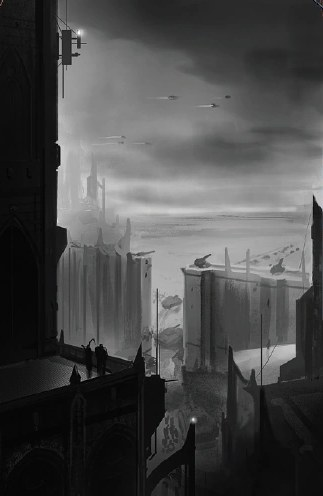
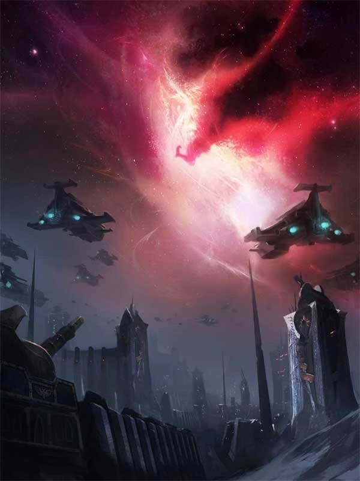

Fortress world
| Fortress world | |
|---|---|
| Class of Imperial world | |
 Bastion walls of a fortress world, from a Departmento Munitorum survey pict Artwork © Games Workshop | |
| Administratum class | Fortress world[a] |
| Typical tithe | Paid in soldiers and garrison duty; often Aptus Non for goods |
| Population | Millions to over a hundred billion; nearly all under arms or in reserve |
| Ruler | A military governor, such as the Lord Castellan |
| Garrison | Astra Militarum, Planetary Defence Forces, Imperial Navy squadrons |
| Examples | Cadia (destroyed 999.M41), Belis Corona, Talasa Prime, Kasr Partox (fallen) |
A fortress world is a class of planet of the Imperium of Mankind that has been fortified and garrisoned to guard a strategic region against a constant threat. Its cities are fortresses, its industry is given over to war, and its people are trained as soldiers from childhood. Fortress worlds are placed at the gateways of the Imperium: at stable routes through the Warp, at the borders of hostile empires, and around the Eye of Terror and other warp rifts. Several fortress worlds linked together form a barrier to keep an enemy from spreading into Imperial space.[1][2]
The most famous fortress world was Cadia, which guarded the Cadian Gate, the only stable passage out of the Eye of Terror, for ten thousand years until its destruction by Abaddon the Despoiler in 999.M41. Its fall during the Thirteenth Black Crusade was followed by the opening of the Great Rift. In the Era Indomitus the Imperium has fortified new worlds along the edges of the Rift, and the class has grown in number and importance.[3][4]
Characteristics
[edit]A fortress world may be any kind of planet, from a temperate garden world such as Cadia to a barren dead world such as Belis Corona. What makes it a fortress world is its purpose. Its surface is covered with fortress-cities, bunker lines, missile silos, void-shield generators and landing fields. Its orbit is guarded by defence platforms, star forts and minefields, and its moons are often fortified as well. Stockpiles of munitions and supplies are kept in armoured vaults deep beneath the surface to allow it to withstand a siege of years.[1][5]
Fortress worlds are generally ruled by a military governor rather than a civil one. On Cadia supreme authority lay with the Lord Castellan, who was also commander of the planet's regiments. The civilian economy, where one exists, is directed to the support of the garrison. Many fortress worlds also house the headquarters of a sector or segmentum fleet.[3]

Society
[edit]The people of a fortress world are raised for war. On Cadia every child was taught to handle a lasgun, youth units fought in the field as Whiteshields before admission to a regiment, and every adult served or stood in reserve. Military rank, drill and discipline govern public life, and whole families serve in the same regiments over many generations. Fortress-worlders are known throughout the Astra Militarum for discipline and professionalism, and their officers and drill instructors are sought by other regiments.[6][3]
The Imperial Cult on fortress worlds is martial and austere, honouring the Emperor as protector and the dead of past sieges as martyrs. Shrines to fallen soldiers are common, and the defence of the world is treated as a sacred duty.[7]
Military role
[edit]A fortress world serves three purposes. It is a barrier, holding a route an enemy must pass; a base, from which fleets and armies can strike; and a reservoir of soldiers, raising regiments for service elsewhere. The Cadian Shock Troops were raised on Cadia in greater numbers than any other regiments in the Imperium, and their doctrine became the model for much of the Astra Militarum.[6][5]
Fortress worlds that fall are a disaster for the Imperium, and their capture is a prize for its enemies. The Iron Warriors in particular seek to take fortress worlds, and have turned several into strongholds of their own, among them Kasr Partox in the Cadian System.[5]
Notable fortress worlds
[edit]| World | Segmentum | Notes |
|---|---|---|
| Cadia | Segmentum Obscurus | Guarded the Cadian Gate from M31; withstood twelve Black Crusades; destroyed 999.M41 |
| Belis Corona | Segmentum Obscurus | Dead world near the Eye of Terror; main base of Battlefleet Obscurus and headquarters of the segmentum's defence in 999.M41 |
| Kasr Partox | Segmentum Obscurus | Fortress world of the Cadian System; taken by the Iron Warriors in 999.M41 |
| Talasa Prime | Ultima Segmentum | Fortress world of Ultramar, given by the Ultramarines to the Deathwatch and the Ordo Xenos |
| Titan | Segmentum Solar | Moon of Saturn; fortress of the Grey Knights and the Ordo Malleus |
| Medrengard | Segmentum Obscurus | Traitor fortress world and daemon world of the Iron Warriors within the Eye of Terror |

History
[edit]The Imperium fortified strategic worlds from the time of the Great Crusade (c. 798.M30–005.M31), but the fortress world as a class took shape after the Horus Heresy (005–014.M31). When the defeated traitor Legions fled into the Eye of Terror during the Great Scouring, Cadia and its neighbours were colonised and fortified to hold the Cadian Gate. The Codex reforms of c. 020.M31 assigned fortress worlds to the Astra Militarum as fixed garrisons.[3][8][b]
Over the following ten thousand years fortress worlds were raised around the Maelstrom, along the Eastern Fringe and on the borders of the Ork empires. Their defence was tested many times, above all in the Black Crusades of Abaddon, the first of which broke through the Cadian Gate in 781.M31.[5]
The destruction of Cadia in 999.M41 and the opening of the Great Rift changed the Imperium's defences entirely. The Rift could not be held at a single gate, and fortress worlds have since been built or reinforced at the few stable crossings, such as the Nachmund Gauntlet, and on both sides of the Rift. Surviving Cadians have been settled on many of these worlds.[4]
Timeline
[edit]| Date | Event |
|---|---|
| c. 015–020.M31 | Cadia colonised and fortified after the Great Scouring[c] |
| 781.M31 | First Black Crusade breaks through the Cadian Gate |
| 139–160.M41 | Gothic War; Abaddon bypasses the Gate |
| 999.M41 | Fall of Cadia and Kasr Partox; Belis Corona directs the defence of the Segmentum Obscurus |
| From 999.M41 | New fortress worlds raised along the Great Rift |
See also
[edit]Notes
[edit]References
[edit]- ^ a b Warhammer 40,000: Rulebook (5th Edition). Games Workshop.
- ^ Battlefleet Gothic Rulebook, pg. 86.
- ^ a b c d Dark Heresy Core Rulebook (RPG), pp. 252-253.
- ^ a b White Dwarf 139 (UK), "Interstellar Travel".
- ^ a b c d White Dwarf 140 (UK), "Interstellar Travel".
- ^ a b Warhammer 40,000: Rulebook (5th Edition). Games Workshop.
- ^ Battlefleet Gothic Rulebook, pg. 86.
- ^ Dark Heresy Core Rulebook (RPG), pp. 252-253.